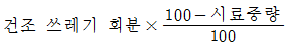
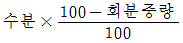
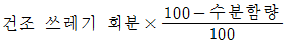
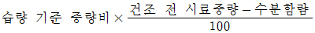
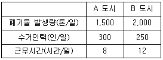
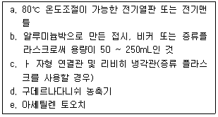
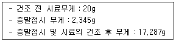
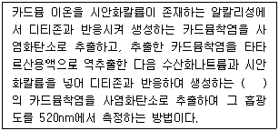
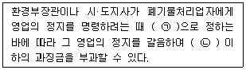
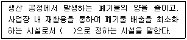

폐기물처리산업기사 (2016-03-06 기출문제)
1과목: 폐기물개론
1. 쓰레기를 4분법으로 축분도 중 2번째에서 모포가 걸렸다. 이후 4회 더 축분하였다면 추후 모포의 함유율은?
- 25%
- 12.5%
- 6.25%
- 3.13%
(정답률: 56%)

2. 공원, 도로 등의 개방지역에서 배출되는 쓰레기의 조성을 크게 3가지로 구분하였을 경우, 가장 적합한 내용은?
- 토사, 음식물류, 종이(휴지)류
- 음식물류, 종이(휴지)류, 비닐류
- 포장재류, 목재류(나뭇잎), 비닐류
- 토사, 목재류(나뭇잎), 포장재류
(정답률: 80%)
3. 습량기준 회분율(A, %)을 구하는 식으로 맞는 것은?




(정답률: 82%)
4. 쓰레기 관리 체계에서 비용이 가장 많이 드는 것은?
- 수거
- 저장
- 처리
- 처분
(정답률: 94%)
5. 수거 노선을 설정할 때 유의사항으로 가장 거리가 먼 것은?
- U자형 회전을 피하여 수거한다.
- 아주 많은 양의 쓰레기가 발생되는 발생원은 가능한 한 같은 날 왕복 내에서 수거한다.
- 수거지점과 수거빈도를 정하는 데 있어서 기존정책이나 규정을 참고한다.
- 수거인원 및 차량형식이 같은 기존 시스템의 조건들을 서로 관련시킨다.
(정답률: 79%)
6. 다음은 폐기물 수거에 대한 효율을 결정하기 위한 자료이다. A 도시의 수거효율은?

- B 도시와 같다.
- B 도시보다 높다.
- B 도시보다 낮다.
- 이 자료로는 알 수 없다.
(정답률: 57%)
7. 폐기물의 분석방법은 개략분석(proxi- mately analysis)과 극한분석(ultimately analysis)으로 구분된다. 다음 중 극한분석에 해당하는 것은?
- 원소분석
- 삼성분 분석
- 사성분 분석
- 발열량 분석
(정답률: 72%)
8. 연속적으로 변화하는 자장 속에 비장성이며, 전기전도성이 좋은 구리, 알루미늄, 아연 등을 넣어 금속 내에 소용돌이 전류를 발생시켜 생기는 반발력의 차를 이용하여 분리하는 선별장치는?
- 정전기선별장치
- 자력선별장치
- 와전류선별장치
- 비중선별장치
(정답률: 89%)
9. 일반폐기물과 지정폐기물의 분류기준은?
- 발생원
- 유해성
- 용융성
- 발생량
(정답률: 85%)
10. 중금속을 함유한 슬러지를 시멘트 고형화할 때 고형화 전의 슬러지 용적 대비 고형화 후의 슬러지 용적은? (단, 고화처리 전 중금속 슬러지 비중은 1.1, 고화처리 후 폐기물의 비중은 1.2, 시멘트 첨가량은 슬러지 무게의 30%)
- 약 100%
- 약 110%
- 약 120%
- 약 130%
(정답률: 48%)
11. 물질회수를 위한 선별방법 중 플라스틱에서 종이를 선별할 수 있는 방법으로 가장 적절한 것은?
- 와전류선별
- Jig 선별
- 광학 선별
- 정전기적 선별
(정답률: 74%)
12. 쓰레기의 발생량과 성상에 관한 설명으로 가장 거리가 먼 것은?
- 일반적으로 수집빈도가 높을수록 또는 쓰레기통이 클수록 쓰레기 발생량이 증가한다.
- 도시의 규모가 커질수록 쓰레기 발생량이 증가한다.
- 생활수준이 증가할수록 쓰레기의 종류는 다양화되고 발생량은 감소한다.
- 재활용품의 회수 및 재이용률이 증가할수록 쓰레기 발생량은 감소한다.
(정답률: 90%)
13. 폐기물의 성질을 조사하기 위해 시료 채취 방법으로 원추 4분법을 이용하여 4회 실시한 후 시료를 얻었다. 만일 초기에 조대형 쓰레기를 선별하여 무게를 측정한 결과 60kg이라면 이중 몇 kg이 시료에 포함되어야 하는가? (단, 조대형 쓰레기의 비중은 동일하다고 가정한다.)
- 60kg
- 15kg
- 7.5kg
- 3.75kg
(정답률: 49%)
14. 모든 인자를 시간에 따른 함수로 나타낸 후, 시간에 대한 함수로 표시된 각 인자간의 상호관계를 수식화하여 쓰레기 발생량을 예측하는 방법은?
- 동적모사모델
- 다중회귀모델
- 시간인자모델
- 다중인자모델
(정답률: 82%)
15. 쓰레기 압축처리 방법 중 포장기(baler)에 대한 설명으로 가장 거리가 먼 것은?
- 압축 후 삼베나 가죽 또는 철끈으로 묶는다.
- 관리에 용이한 크기나 무게로 포장한다.
- 완전하게 건조되지 못한 폐기물은 취급하기 곤란하다.
- 매립지에서는 포장을 해체하여 최종 처분한다.
(정답률: 65%)
16. 폐기물의 총고정 탄소량이 강열감량의 50%이다. 폐기물의 초기 함수율이 70%이고 강열감량분이 건조 고형물의 60%라면 총고정탄소량의 무게는? (단, 초기폐기물의 무게：1,000kg, 고형물 비중：1.0)
- 180kg
- 120kg
- 90kg
- 60kg
(정답률: 56%)
17. 파쇄방법 중 취성도가 큰 물질에 가장 효과적인 방법은?
- 전단파쇄
- 인장파쇄
- 압축파쇄
- 원심파쇄
(정답률: 66%)
18. 폐기물 발생량 조사방법으로 가장 거리가 먼 것은?
- 적재차량 계수분석법
- 정량조사법
- 직접계근법
- 물질수지법
(정답률: 72%)
19. 쓰레기 수송법 중 관거(pipe line) 방법에 관한 설명으로 가장 거리가 먼 것은?
- 초기 투자비용이 많이 소요된다.
- 쓰레기 발생밀도가 상대적으로 높은 지역에서 사용 가능하다.
- 장거리 수송이 경제적으로 현실성이 있다.
- 관거 설치 후에 노선변경이 어렵다.
(정답률: 83%)
20. 쓰레기 파쇄에 대한 설명으로 가장 거리가 먼 것은?
- 파쇄 후 부피가 감소하는 것이 대부분이나 때로는 파쇄 후의 부피가 파쇄전보다 커질수도 있다.
- 파쇄는 흔히 소각 및 매립의 전처리공정으로 이용된다.
- 폐기물 입자의 표면적이 감소되어 미생물 작용이 촉진된다.
- 압축 시에 밀도증가율이 크므로 운반비가 감소된다.
(정답률: 72%)
2과목: 폐기물처리기술
21. 슬러지를 개량(conditioning)하는 주된 목적은?
- 농축 성질을 향상시킨다.
- 탈수 성질을 향상시킨다.
- 소화 성질을 향상시킨다.
- 구성성분 성질을 개선, 향상시킨다.
(정답률: 81%)
22. 분뇨의 혐기성 소화처리 방식의 단점이 아닌 것은?
- 처리과정에서 취기가 발생하고 위생해충이 발생하기 쉬우므로 오니 등의 취급에 대해서는 위생상 특히 주의가 필요하다.
- 유지관리 시 특별한 기술을 요하지 않고 비교적 용이하며, 관리비가 적게 든다.
- 호기성 산화방식에 비하여 소화속도가 늦다.
- 소화조의 용적이 비교적 대용량이 되므로 처리시설의 건설에 넓은 부지를 필요로 한다.
(정답률: 58%)
23. 함수율이 95%인 슬러지 2,000m3을 함수율 20%로 처리하여 매립하였다면 매립된 슬러지의 중량(톤)은? (단, 슬러지 비중 1.0)
- 110
- 125
- 130
- 135
(정답률: 69%)
24. 폐기물 열분해에 관한 설명으로 틀린 것은?
- 폐기물을 산소의 공급 없이 가열하여 가스, 액체, 고체의 3성분으로 분리한다.
- 고도의 발열반응으로 폐열회수가 가능하다.
- 고온 열분해에서 1,700℃까지 온도를 올리면 생산되는 모든 재는 slag로 배출된다.
- 열분해에서 일반적으로 저온이라 함은 500~900℃, 고온은 1,100 ~ 1,500℃를 말한다.
(정답률: 59%)
25. 5%의 고형물을 함유하는 500m3/day의 슬러지를 진공 여과시켜 75%의 수분을 함유하는 슬러지 케이크를 만든다면 하루 생산되는 슬러지 케이크의 양(m3)은? (단, 비중은 1.0 기준)
- 100
- 90
- 83
- 75
(정답률: 46%)
26. 슬러지의 퇴비화에 대한 설명으로 틀린 것은?
- 최적 수분함량은 50 ~ 60% 가량이다.
- pH는 대체로 5.5 ~ 8.0이 좋다.
- C/N비는 25 ~ 35 정도가 좋다.
- 온도는 70℃ 이상으로 유지시키면 좋다.
(정답률: 70%)
27. 혐기성 소화 시에 생성되는 유기산의 종류와 가장 거리가 먼 것은?
- Formic Acid
- Propionic Acid
- Butyric Acid
- Glutamic Acid
(정답률: 69%)
28. 합성차수막인 PVC의 장·단점을 설명한 내용으로 틀린 것은?
- 강도가 높다.
- 접합이 용이하다.
- 자외선, 오존, 기후에 약하다.
- 대부분의 유기화학물질에 강하다.
(정답률: 79%)
29. 질소와 인을 제거하기 위한 생물학적 고도처리 공법 중 호기조의 역할과 가장 거리가 먼 것은?
- 질산화
- 탈질화
- 유기물의 산화
- 인의 과잉섭취
(정답률: 66%)
30. 처리장으로 유입되는 생분뇨의 BOD가 15,000ppm, 이 때의 염소이온 농도가 6,000ppm이었다. 이 생분뇨를 희석한 후 활성슬러지법으로 처리한 처리수의 BOD는 60ppm, 염소이온은 200ppm 이었다면 활성슬러지법에서의 BOD 제거율은?
- 73%
- 78%
- 82%
- 88%
(정답률: 44%)
31. 매립지 설계 시 침출수 집배수층의 조건으로 만족 여부를 판단하기 위해 D15, d85, d15 가 사용된다. 여기에서 D15가 의미하는 것은?
- 여과층
- 집배수층 주변물질
- 집배수층과 폐기물사이의 토양층
- 침출수 집배수층 재료의 입경
(정답률: 65%)
32. 쓰레기를 소각할 경우 발생하는 기체로 가장 적절하지 않은 것은?
- NOx
- CH4
- CO2
- CO
(정답률: 61%)
33. 점토가 차수막으로 적합하기 위한 포괄적 조건으로 가장 거리가 먼 것은?
- 소성지수：10% 미만
- 투수계수：10-7cm/sec 미만
- 점토 및 미사토 함유량：20% 이상
- 액성한계：30% 이상
(정답률: 51%)
34. 수거분뇨 중의 협잡물을 제거할 때 사용하는 것은?
- Decanter
- Drum Screen
- Filter Press
- Vaccum Filter
(정답률: 61%)
35. 불포화토양층 내에 산소를 공급함으로써 미생물의 분해를 통해 유기물질의 분해를 도모하는 토양정화법은?
- 생물학적분해법(biodegradation)
- 생물주입배출법(biobenting)
- 토양경작법(ladfarming)
- 토양세정법(soil flushing)
(정답률: 71%)
36. RDF의 구비조건이 아닌 것은?
- 대기오염이 적을 것
- 함수량이 낮을 것
- 발열량이 낮을 것
- 재의 양이 적을 것
(정답률: 70%)
37. 분뇨처리장의 제1소화조 슬러지량은 30%가 되어야 한다. 1일 100kL 투입에서 슬러지량은? (단, 제1소화조의 소화일수는 15일로 한다.)
- 150kL
- 250kL
- 350kL
- 450kL
(정답률: 51%)
38. 퇴비화 과정에서 팽화제로 이용되는 물질과 가장 거리가 먼 것은?
- 톱밥
- 왕겨
- 볏집
- 하수슬러지
(정답률: 72%)
39. 슬러지나 폐기물을 토양에 주입할 때 발생할 수 있는 이익으로 가장 거리가 먼 것은?
- 토양의 침식이 감소한다.
- 토양의 투수성이 증가한다.
- 폐기물을 방치하는 것보다 농경지와 같은 비점원 오염원으로부터의 오염물질 배출량이 감소된다.
- 토양의 수분함량이 감소한다.
(정답률: 58%)
40. 표면차수막과 연직차수막을 비교한 내용으로 틀린 것은?
- 차수성 확인：연직차수막은 지하에 매설하기 때문에 확인이 어렵다.
- 경제성：표면차수막은 단위면적당 공사비가 비싼 반면 총 공사비는 싸다.
- 보수：연직차수막은 차수막 보강시공이 가능하다.
- 지하수집배수시설：표면차수막은 필요하다.
(정답률: 70%)
3과목: 폐기물 공정시험 기준(방법)
41. 다음 기구 및 기기 중 기름성분 측정시험(중량법)에 필요한 것들만 나열한 것은?

- a, b, c
- b, c, d
- c, d, e
- a, c, e
(정답률: 62%)
42. 폐기물 중에 함유된 기름성분 측정에 사용되는 추출 용매는?
- 메틸오렌지
- 노말헥산
- 알코올
- 디에틸디티오카르바민산
(정답률: 64%)
43. 유도결합플라스마－원자발광분광법에서 일어날 수 있는 간섭 중 화학적 간섭이 발생할 수 있는 경우에 해당하는 것은?
- 분석에 사용하는 스펙트럼선이 다른 인접선과 완전히 분리되지 않은 경우
- 시료용액의 점도가 높아져 분무 능률이 저하하는 경우
- 불꽃 중에서 원자가 이온화하는 경우
- 분석에 사용하는 스펙트럼선이 불꽃 중에서 생성되는 목적원소의 원자증기 이외의 물질에 의하여 흡수되는 경우
(정답률: 57%)
44. 실험실에서 폐기물의 수분을 측정하기 위해 다음과 같은 결과를 얻었다. 폐기물의 수분함량은?

- 25.3%
- 28.3%
- 34.3%
- 38.6%
(정답률: 36%)
45. 4℃의 물 500mL에 순도가 75%인 시약용 납을 5mg을 녹였다. 이 용액의 납 농도(ppm)는?
- 2.5
- 5.0
- 7.5
- 10.0
(정답률: 46%)
46. 자외선/가시선 분광법에 의한 비소의 측정방법으로 옳은 것은?
- 적자색의 흡광도를 430nm에서 측정
- 적자색의 흡광도를 530nm에서 측정
- 청색의 흡광도를 430nm에서 측정
- 청색의 흡광도를 530nm에서 측정
(정답률: 68%)
47. 중량법에 대한 설명으로 틀린 것은?
- 수분 시험 시 물중탕 후 1⑤ ~ 110℃의 건조기 안에서 4시간 건조한다.
- 고형물 시험 시 물중탕 후 1⑤ ~ 110℃의 건조기 안에서 4시간 건조한다.
- 강열감량 시험 시 600±25℃에서 1시간 강열한다.
- 강열감량 시험 시 25% 질산암모늄용액을 사용한다.
(정답률: 60%)
48. 자외선/가시선 분광법에 의한 시안 측정 시 사용하는 시약 중 잔류염소를 제거하기 위한 시약은?
- 질산(1＋4)
- 클로라민 T
- L－아스코빈산
- 아세트산아연 용액
(정답률: 55%)
49. 폐기물 중에 함유되어 있는 시안을 자외선/가시선 분광법으로 측정코자 한다. 폐기물공정시험 기준상 규정된 시안측정법은?
- 피리딘피라졸론법
- 디에틸디티오카르바민산법
- 디티존법
- 디페닐카르바지드법
(정답률: 51%)
50. 폐기물공정시험기준(방법)에 규정된 시료의 축소 방법과 가장 거리가 먼 것은?
- 원추이분법
- 원추사분법
- 교호삽법
- 구획법
(정답률: 70%)
51. 기체크로마토그래피법으로 휘발성 저급염소화탄화수소류를 측정하는데 사용되는 검출기로 가장 적합한 것은?
- ECD
- FID
- FPD
- TCD
(정답률: 56%)
52. 총칙에서 규정하고 있는 용어 정의로 틀린 것은?
- 무게를 “정확히 단다”라 함은 규정된 수치의 무게를 0.1 mg 까지 다는 것을 말한다.
- “정확히 취하여”라 하는 것은 규정한 양의 액체를 홀피펫으로 눈금까지 취하는 것을 말한다.
- “정밀히 단다”라 함음 규정된 양의 시료를 취하여 화학저울 또는 미량저울로 칭량함을 말한다.
- “용기”라 함은 물질을 취급 또는 저장하기 위한 것으로 일정 기준 이상의 것으로 한다.
(정답률: 51%)
53. 조제된 pH 표준액 중 가장 높은 pH를 갖는 표준용액은?
- 수산염 표준액
- 프탈산염 표준액
- 탄산염 표준액
- 인산염 표준액
(정답률: 46%)
54. 폐기물의 수소이온농도 측정 시 적용되는 정밀도에 관한 기준으로 옳은 것은?
- 임의의 한 종류의 pH 표준용액에 대해 검출부를 정제수로 잘 씻은 다음 5회 되풀이하여 pH를 측정하였을 때 그 재현성이 ±0.⑤ 이내이어야 한다.
- 임의의 한 종류의 pH 표준용액에 대해 검출부를 정제수로 잘 씻은 다음 5회 되풀이하여 pH를 측정하였을 때 그 재현성이 ±0.1 이내이어야 한다.
- 임의의 한 종류의 pH 표준용액에 대해 검출부를 정제수로 잘 씻은 다음 10회 되풀이하여 pH를 측정하였을 때 그 재현성이 ±0.⑤ 이내이어야 한다.
- 임의의 한 종류의 pH 표준용액에 대해 검출부를 정제수로 잘 씻은 다음 10회 되풀이하여 pH를 측정하였을 때 그 재현성이 ±0.1 이내이어야 한다.
(정답률: 62%)
55. 마이크로파 및 마이크로파를 이용한 시료의 전처리(유기물 분해)에 관한 내용으로 틀린 것은?
- 가열속도가 빠르고 재현성이 좋다.
- 마이크로파는 금속과 같은 반사물질과 매질이 없는 진공에서는 투과하지 않는다.
- 마이크로파는 전자파 에너지의 일종으로 빛의 속도로 이동하는 교류와 자기장으로 구성되어 있다.
- 마이크로파 영역에서 극성분자나 이온이 쌍극자모멘트와 이온전도를 일으켜 온도가 상승하는 원리를 이용한다.
(정답률: 61%)
56. 원자흡수분광광도계에서 불꽃을 만들기 위해 사용되는 가연성가스와 조연성가스 중 내화성 산화물을 만들기 쉬운 원소의 분석에 적당한 것은?
- 수소－공기
- 아세틸렌－공기
- 아세틸렌－일산화이질소
- 프로판－공기
(정답률: 66%)
57. 카드뮴 측정을 위한 자외선/가시선 분광법의 측정원리에 관한 내용으로 ( )에 알맞은 것은?

- 청색
- 남색
- 적색
- 황갈색
(정답률: 55%)
58. 감염성미생물에 대한 검사방법으로 가장 거리가 먼 것은?
- 아포균 검사법
- 세균배양 검사법
- 멸균테이프 검사법
- 일반세균 검사법
(정답률: 62%)
59. 기체크로마토그래피법을 이용하여 '유기인'을 분석하는 원리로 틀린 것은?
- 유기인 화합물 중 이피엔, 파라티온, 메틸디메톤, 다이아지논 및 펜토에이트의 측정에 적용된다.
- 농축장치는 구데루나 다니쉬 농축기를 사용한다.
- 컬럼충전제는 2종 이상을 사용하여 그 중 1종 이상에서 확인된 성분은 정량한다.
- 유효측정농도는 0.00⑤mg/L 이상으로 한다.
(정답률: 42%)
60. 순수한 물 500mL에 HCl(비중 1.18) 100mL를 혼합할 때 이 용액의 염산농도(W/W)는?
- 14.24%
- 17.4%
- 19.1%
- 23.6%
(정답률: 44%)
4과목: 폐기물 관계 법규
61. 방치폐기물의 처리를 폐기물처리 공제조합에 명할 수 있는 방치폐기물의 처리량 기준으로 옳은 것은? (단, 폐기물처리업자가 방치한 폐기물의 경우)
- 그 폐기물처리업자의 폐기물 허용보관량의 1배 이내
- 그 폐기물처리업자의 폐기물 허용보관량의 1.5배 이내
- 그 폐기물처리업자의 폐기물 허용보관량의 2배 이내
- 그 폐기물처리업자의 폐기물 허용보관량의 3배 이내
(정답률: 63%)
62. 과징금에 관한 내용으로 ( )에 알맞은 것은?

- ㉠ 환경부령, ㉡ 1억원
- ㉠ 대통령령, ㉡ 1억원
- ㉠ 환경부령, ㉡ 2억원
- ㉠ 대통령령, ㉡ 2억원
(정답률: 63%)
63. 폐기물 처리 담당자 등이 이수하여야 하는 교육 과정명으로 틀린 것은?
- 폐기물 처분시설 기술담당자 과정
- 사업장폐기물배출자 과정
- 폐기물재활용 담당자과정
- 폐기물처리업 기술요원 과정
(정답률: 54%)
64. 폐기물 처리업의 업종 구분으로 틀린 것은?
- 폐기물 종합처분업
- 폐기물 중간처분업
- 폐기물 재활용업
- 폐기물 수집·운반업
(정답률: 57%)
65. 폐기물처리시설 중 멸균분쇄시설의 검사기관으로 적절치 않은 것은?
- 한국환경공단
- 한국기계연구원
- 보건환경연구원
- 한국산업기술시험원
(정답률: 42%)
66. 환경상태의 조사·평가에서 국가 및 지방자치단체가 상시 조사·평가하여야 하는 내용이 아닌 것은?
- 환경의 질의 변화
- 환경오염 및 환경훼손 실태
- 환경오염지역의 원상회복 실태
- 자연환경 및 생활환경 현황
(정답률: 49%)
67. 시·도지사는 관할 구역의 폐기물을 적정하게 처리하기 위하여 환경부장관이 정하는 지침에 따라 몇 년마다 폐기물 처리에 관한 기본계획을 세워 환경부장관에게 승인을 받아야 하는가?
- 3년
- 5년
- 7년
- 10년
(정답률: 45%)
68. 관리형 매립시설에서 발생되는 침출수의 생물화학적 산소요구량의 배출허용기준(mg/L)은? (단, 청정지역 기준)
- 10
- 30
- 50
- 70
(정답률: 60%)
69. 폐기물 처리 기본계획에 포한되어야 하는 사항으로 틀린 것은?
- 폐기물의 기본관리여건 및 전망
- 폐기물처리시설의 설치 현황과 향후 설치 계획
- 재원의 확보 계획
- 폐기물의 감량화와 재활용 등 자원화에 관한 사항
(정답률: 48%)
70. 기술관리인을 두어야 할 폐기물처리시설 기준으로 옳은 것은? (단, 폐기물처리업자가 운영하는 폐기물처리시설은 제외)
- 멸균분쇄시설로서 1일 처리능력이 5톤 이상인 시설
- 사료화, 퇴비화 또는 소멸화시설로서 1일 처리능력이 10톤 이상인 시설
- 압축, 파쇄, 분쇄 또는 절단시설로서 1일 처리능력이 100톤 이상인 시설
- 연료화 시설로서 1일 처리능력이 50톤 이상인 시설
(정답률: 41%)
71. 폐기물 재활용 시 적용되는 에너지 회수기준으로 맞는 것은?
- 다른 물질과 혼합하지 아니하고 해당 폐기물의 저위발열량이 킬로그램당 3천킬로칼로리 이상일 것
- 다른 물질과 혼합하지 아니하고 해당 폐기물의 저위발열량이 킬로그램당 3천5백킬로칼로리 이상일 것
- 다른 물질과 혼합하지 아니하고 해당 폐기물의 저위발열량이 킬로그램당 4천킬로칼로리 이상일 것
- 다른 물질과 혼합하지 아니하고 해당 폐기물의 저위발열량이 킬로그램당 4천5백킬로칼로리 이상일 것
(정답률: 60%)
72. 폐기물관리법상 “재활용”에 해당하는 활동으로 틀린 것은?
- 폐기물을 재사용·재생이용하는 활동
- 폐기물을 재사용·재생이용할 수 있는 상태로 만드는 활동
- 폐기물로부터 에너지를 회수하는 활동
- 재사용·재생이용 폐기물 회수 활동
(정답률: 44%)
73. 폐기물 처분시설 또는 재활용시설 중 의료폐기물을 대상으로 하는 시설의 기술관리인 자격으로 틀린 것은?
- 폐기물처리산업기사
- 임상병리사
- 위생사
- 산업위생지도사
(정답률: 59%)
74. 폐기물감량화시설에 관한 정의로 ( )에 알맞은 내용은?

- 대통령령
- 국무총리령
- 환경부령
- 시·도지사령
(정답률: 49%)
75. 폐기물처리시설사후관리계획서(매립시설인 경우에 한함)에 포함될 사항으로 틀린 것은?
- 빗물배제계획
- 지하수 수질조사계획
- 사후영향평가 조사서
- 구조물과 지반 등의 안정도유지계획
(정답률: 42%)
76. 폐기물 처리시설 중 중간처분시설인 기계적 처분시설에 해당하는 것은?
- 열 분해시설(가스화시설을 포함한다.)
- 응집·침전 시설
- 용융시설(동력 10마력 이상인 시설로 한정한다.)
- 고형화 시설
(정답률: 47%)
77. 폐기물 발생 억제 지침 준수의무 대상 배출자의 업종에 해당하지 않는 것은?
- 금속가공제품 제조업(기계 및 가구 제외)
- 연료제품 제조업(핵연료 제조업은 제외)
- 자동차 및 트레일러 제조업
- 전기장비 제조업
(정답률: 37%)
78. 사업장폐기물배출자는 사업장폐기물의 종류와 발생량 등을 환경부령으로 정하는 바에 따라 신고하여야 한다. 이를 위반하여 신고를 하지 아니하거나 거짓으로 신고를 한 자에 대한 과태료 처분 기준은?
- 200만원 이하
- 300만원 이하
- 500만원 이하
- 1천만원 이하
(정답률: 44%)
79. 폐기물처리업의 시설·장비·기술능력의 기준 중 폐기물수집·운반업의 기준으로, 생활폐기물 또는 사업장생활폐기물을 수집·운반하는 경우의 장비 기준으로 틀린 것은?
- 밀폐식 운반차량 1대 이상(적재 능력합계 15세제곱미터 이상)
- 개방식 운반차량 1대 이상(적재 능력합계 8톤 이상)
- 운반용 압축차량 또는 압착차량 1대 이상
- 기계식 상차장치가 부착된 차량 1대 이상(특별시·광역시에 한하되, 광역시의 경우 군지역은 제외한다)
(정답률: 44%)
80. 생활폐기물 수집·운반 대행자에 대한 대행실적평가결과가 대행실적평가 기준에 미달한 경우 생활폐기물 수집·운반 대행자에 대한 과징금액 기준은? (단, 영업정지 3개월을 갈음하여 부과할 경우)
- 1천만원
- 2천만원
- 3천만원
- 5천만원
(정답률: 32%)